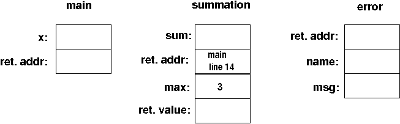
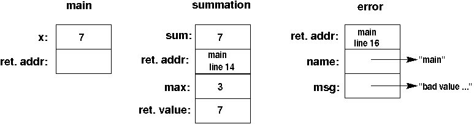
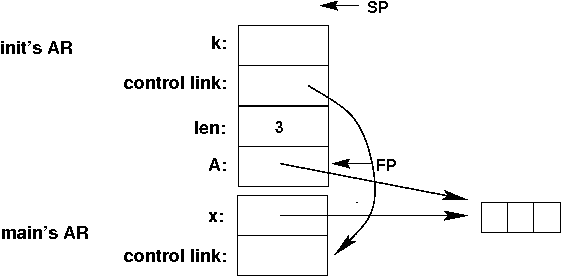
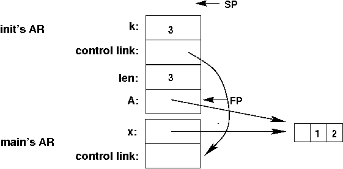

Here are the three activation records just after main calls summation:

And here they are just before summation returns:
And finally, here they are just after main calls error; note that the string literals would be stored in the Static Data Area:

Here is the stack just after main calls init (the array pointed to by x and A is in the heap):

And here is the stack just before init returns:
